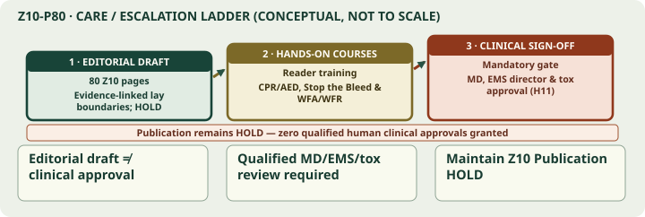

Z10-P80 · Wilderness medicine · New manuscript
Maintain Z10 clinical review gates, training currency, and publication HOLD
Keep all Z10 draft medical pages explicitly bounded as unapproved editorial drafts pending qualified clinical review and hands-on training.
When it applies · Governance, editorial review, and specialist sign-off across all 80 pages of Zone Z10 (Wilderness Medicine).
Equipment · Astra A01 specialist review register (H11), primary clinical evidence pack (medicine.md), and certified hands-on training records.

Actions
- Treat every Z10 page as an editorial review draft on `publication: HOLD` with ZERO qualified human clinical approvals until wilderness-medicine physicians, trauma/EMS directors, toxicologists, and infectious-disease reviewers sign off formally.[M20, T01, ED]
- Preserve strict traceability between every consequential medical assertion and its primary authoritative source (ACS Stop the Bleed, ARC, NIH MedlinePlus, CDC, WMS, Poison Control), updating protocols whenever clinical guidelines revise.[M01, M03, M24]
- Direct every reader toward accredited hands-on CPR/AED, Stop the Bleed, and Wilderness First Aid/First Responder training—printed text alone never confers clinical competency.[M01, M03, M20]
Failure recognition · Distributing unreviewed AI-assisted medical drafts as "field-validated clinical instructions" without qualified physician and EMS sign-off.[M20, ED]
Verify · Confirm `publication: HOLD` banner, specialist hold H11 visibility, and zero unauthorized dosages or invasive procedures across all 80 Z10 cards.[M20, ED]
Stop or change course · Do NOT authorize public distribution or field clinical reliance until qualified human clinical sign-off is formally recorded in the custody ledger.[M20, ED]
Evidence and editorial notes
- M01 · American College of Surgeons · STOP THE BLEED Training Course (current web edition)
- Section: Ensure Your Own Safety; Find Life-Threatening Bleeding; Compress · Conditions: Lay responder encountering severe external hemorrhage
Support: Ensure scene safety first, call 911, expose the wound to locate life-threatening bleeding, and apply firm continuous direct pressure with clean gauze or cloth.
Limitations: Does not replace formal hands-on Stop the Bleed training or EMS trauma care. · Conflicting evidence: None across ACS/ARC guidelines.
Editorial note: Separates life-threatening arterial/venous hemorrhage from minor scrapes. · Specialist reviewer: Wilderness medicine and trauma EMS
Primary source · checked 2026-11-24 - M03 · American Red Cross · CPR Steps and Emergency Response (current web edition)
- Section: Check, Call, Care; Unresponsive Person Without Normal Breathing · Conditions: Unresponsive person not breathing normally; lay responder with EMS activation
Support: Verify scene safety, check responsiveness and normal breathing, call 911 and retrieve an AED if available, and begin dispatcher-guided or trained CPR.
Limitations: Lay text reference cannot substitute for hands-on certified CPR/AED training. · Conflicting evidence: None; aligns with AHA/ARC bystander guidance.
Editorial note: Distinguishes lay activation and dispatcher-guided CPR from advanced life support. · Specialist reviewer: EMS and resuscitation specialist
Primary source · checked 2026-11-24 - M20 · NIH / MedlinePlus · First Aid Overview (current web edition)
- Section: Lay First-Aid Scope, Kit Readiness, and Documentation · Conditions: Pre-trip kit preparation and remote patient monitoring
Support: Maintain an inspected, unexpired first-aid kit matched to your actual training, keep written patient observations (time, responsiveness, breathing, symptoms, interventions) for EMS handoff, and practice skills in certified courses.
Limitations: Carrying advanced medical instruments without clinical training adds risk rather than capability. · Conflicting evidence: None; aligns with ARC and NPS-K.
Editorial note: Anchors kit sizing, SOAP-style lay observation logs, and scope-of-practice cards. · Specialist reviewer: Wilderness EMS and clinical education
Primary source · checked 2026-11-24 - M24 · Wilderness Medical Society · Frostbite clinical practice guideline 2024 update (2024)
- Section: Frostbite Protection, Non-Refreezing Rule, and Evacuation · Conditions: Suspected frostbite in backcountry or winter emergencies
Support: Protect frozen tissue from mechanical trauma and friction, remove jewelry before swelling, never rub with snow or dry-heat near open flames, and only consider controlled warm-water rewarming when zero refreezing risk exists during evacuation.
Limitations: Refreezing thawed tissue causes catastrophic tissue loss; spontaneous thaw during evacuation still requires sterile padding and clinical care. · Conflicting evidence: Reconciles frozen B012 P24–P25 with 2024 WMS guidance.
Editorial note: Core clinical frostbite decision boundary in Z10. · Specialist reviewer: Wilderness medicine and frostbite specialist
Primary source · checked 2026-11-24 - T01 · American Red Cross · First Aid Steps (current web edition)
- Section: First Aid Steps > Check the scene; check the person · Conditions: Lay responder in United States; assess safety before contact
Support: Check scene safety, responsiveness, breathing and immediately life-threatening conditions.
Limitations: Lay guidance does not replace advanced clinical or rescue protocols. · Conflicting evidence: None; universal first-response opening gate.
Editorial note: Anchors scene-safety-first rule across Z01. · Specialist reviewer: EMS and wilderness medicine
Primary source · checked 2026-11-24
Source lineage · Astra A01 Specialist Register and NIH MedlinePlus; new manuscript · Classification · New manuscript.